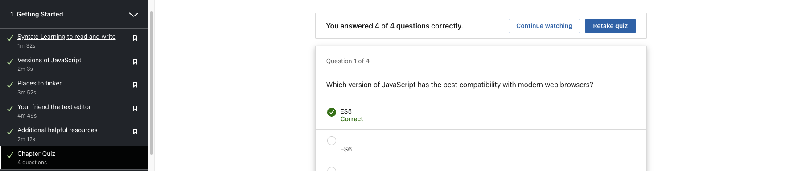
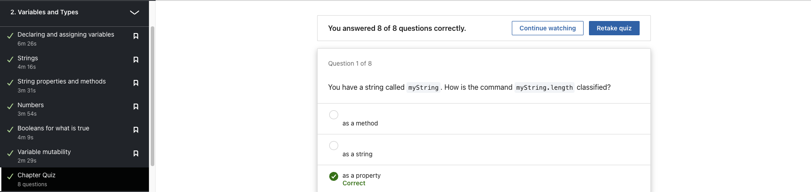
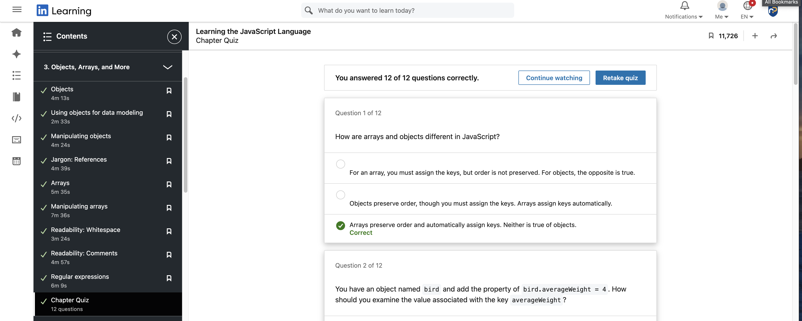
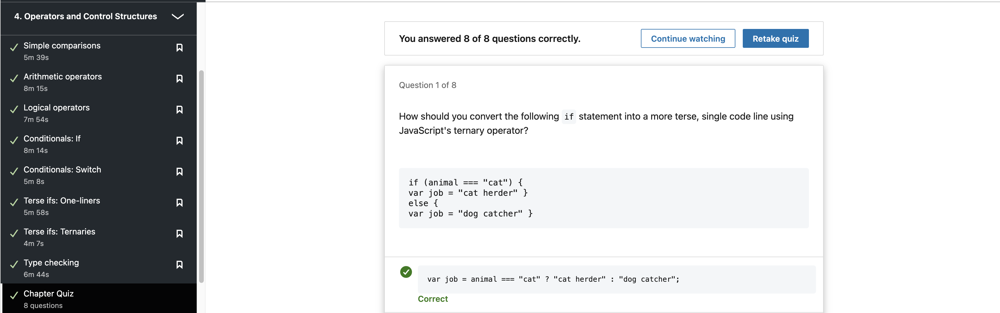
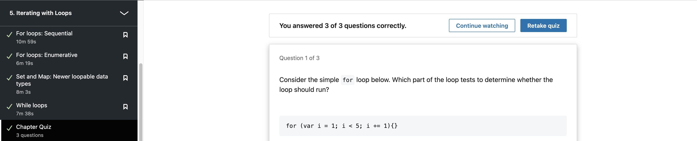

Week 1: Introduction
The 3 Core Pillars of a Website

Hypertext Markup Language (HTML)
- Defines the content; "Bones" of the website
- Simply a set of tags on how we describe a website structure
 HTML Nesting
HTML Nesting
Cascading Style Sheets (CSS)
- Assigns the style; "Skin" of the website
- A language used to describe how an HTML element should look when displayed in a browser
 CSS vs No CSS
CSS vs No CSS
Javascript (JS)
- Adds the functionality; "Brain" of the website
- A language used to program functions in a website
 Javascript Code
Javascript Code
Week 2: Semantic CSS
Semantic CSS
Utilizing HTML and CSS to align with the content's meaning and structure on a web page.
This method underscores the utilization of HTML elements and class names that clearly
communicate the function and significance of various page elements, enhancing code readability,
maintainability, and accessibility.
Common Semantic Elements
- <header>
- <nav>
- <article>
- <section>
- <table>
- <details>
- <figure>
- <form>
- <aside>
- <mark>
- <main>
Week 3: Forms Advanced CSS Layouts
HTML Forms
Utilized for gathering user-provided data on a webpage,
HTML forms offer a means to accumulate various types of information,
including text, numerical values, selections, and more. This data can then be
transmitted to a server for further processing.
Tags
- <form> Tag
- action - URL to send form data to
- method - Type of HTTP request
- <input> Tag: Creates interactive controls
- Single Line Text
- Multiple Line Text
- Selection
- Text/Search
- Hidden
- Password
Flexbox
The flexbox container is the parent of the flex item, and the children of
the flexbox container can be laid out in horizontal or vertical
and flex their size when the content grows or shrinks.
Week 4: Putting it all Together
Responsive Images
Responsive Images auto-resize based on screen size, and allows the site to run more efficiently by loading higher resolution images only when needed
Git
- Git is a system of version control, helping developers control the different versions of files in our projects.
- It keep tracks of all changes made to the project files over time, and allows developer to reset any files contents to match a previous version
- The collection of all the previous versions of project files is known as a Git Repository
Wireframe
A wireframe is an indicative flow of how your design is, and a simple box structure is able to tell the flow of how a site is and information flows.
Week 5: Javascript Basics
Linkedin Learning Quizzes
Through Linkedin Learning, I learnt the basics of Javascript Syntax and was given a simple rundown on how to program in Javascript





Week 6: Javascript Basics (OOP)
Linkedin Learning Quizzes
Object Oriented Programming (OOP)
Objects group together a set of variables and functions to create a model
Objects consist of a set of key/value pairs (key can be referenced as name)
Literal Objects vs Function-Based Objects
Literal Objects
- Has no constructors
- Cannot be inherited
- Best used for “one off” objects where only one copy will exist
- A colon separates the key/value pair
- For global or configuration objects like 'game settings'
Function-Based Objects
- Has a constructor
- Can be inherited (but very messy, out of scope here)
- Best use for stuff that you want to instantiate again and again)
- The this keyword is used instead of the object name
- If you have lots of objects with similar functionality
Week 7: DOM Events Local Storage
DOM
Every element, attribute, text
in HTML is represented by its
own DOM node.
At the top, resides the
document node. It represents
the entire page document.
When you access any node,
you navigate via the document
node.
HTML elements describe the
structure of an HTML
document.
To access the DOM tree, you
start by looking for element
nodes (HTML tags). Once you
locate the node, you can access
its attribute or text nodes.
Accessing Elements
- getElementById();
Uses the value of an element's id attribute
- querySelector();
Uses a CSS selector, and returns the first
matching element. Classes or Ids can be used
- getElementsByClassName();
Selects all elements that have a specific
value for their class attribute
- getElementsByTagName();
Selects all elements that have the specified
tag name
- querySelectorAll()
Uses a CSS selector to select all matching
elements
Week 8: Fetch API
AJAX
AJAX is a technique for loading data into part of a page without having to refresh the entire page. The data is often sent in a format called JavaScript Object Notation (or JSON)
Why AJAX?
With AJAX, if you only need to update a part of the page, you can just update the content of one element. This is done by intercepting an event (user clicks on link or submits a form) and requesting new content from the server via an asynchronous request.
Data Formats
Week 9: Bootstrap
Bootstrap
With today's variety of devices, we have an issue in
keeping up to technology advances.
Bootstrap is one such framework that allows us to
simplify our development process.
A set of user interface libraries and utilities are
placed inside Bootstrap.
Bootstrap Uses
- Flexbox grid for it's layout
- rem for measurements
- Has device breakpoints to accommodate for
different media sizes
Week 12: RestDB
SQL
SQL aka Structured Query Language is
the core of the relational database
which is used for accessing and
managing the databases.
This language is used to manipulate
and retrieve data from a structured
data format in the form of tables and
holds relationships between those
tables
Week 14: Lottie
Lottie
A Lottie is a JSON-based animation file format
that enables designers to ship animations on
any platform as easily as shipping static
assets. They are small files that work on any
device and can scale up or down without
pixelation